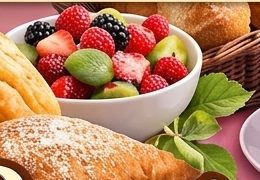
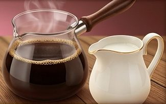

Nuestros recomendados
Las tortas que más nos piden para celebrar. Toca una tarjeta para ver sus detalles.
Hechos con cariño
Cada postre se prepara por encargo, cuidando el sabor, la frescura y los detalles.
🤍
Con mucho cariño
Cada pedido se elabora con dedicación, como si fuera para nuestra propia familia.
🎨
Creatividad
Decoraciones a tu gusto para cumpleaños, aniversarios, bodas y más.
✨
Frescura
Productos frescos, preparados con anticipación para tu fecha de entrega.

